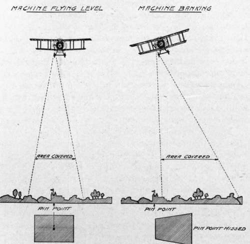
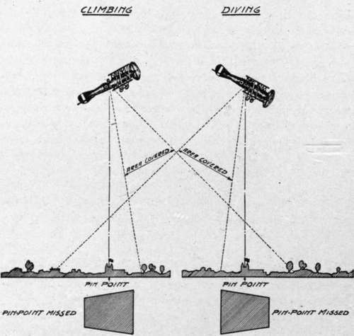
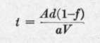
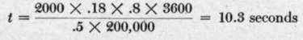
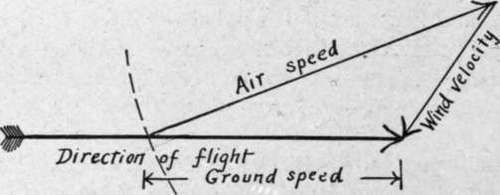
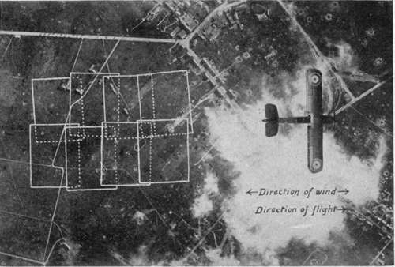
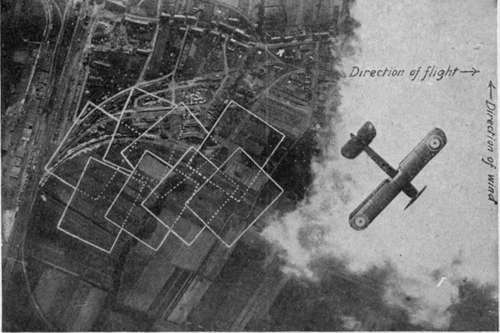
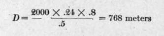

Chapter XXVI. Map Making. Technique Of Negative Making
Description
This section is from the book "Airplane Photography", by Herbert E. Ives. Also available from Amazon: Airplane photography.
Chapter XXVI. Map Making. Technique Of Negative Making
Stated in its simplest terms, the whole problem of making a photographic map from the air consists in taking a large number of slightly overlapping negatives, all from the same altitude, with the plane flying uniformly level. When trimmed and mounted in juxtaposition, or pasted together so as to overlap in their common portions, the prints from these negatives constitute a complete pictorial map. There is thus furnished by a few hours' labor topographic information which would be the work of months to obtain by other means.
The making of map photographs involves all the special technique of spotting, with much in addition. The pilot's task is not merely to go over one object; he must navigate a narrow path, at a constant altitude, on an even keel. If he is to make not merely a ribbon, but a map of considerable width, he must take successive trips parallel to the first, each displaced just far enough from the previous course to insure that no portion is missed—a difficult task indeed.
It is the observer's duty to so time the intervals between exposures that they overlap enough, but not so much as to be wasteful of plates or film. He must also change magazines or films so quickly as to miss no territory, or if some be missed, his is the task of directing the pilot back to the point of the last exposure, where they begin a new series.
Level flying is entirely a pilot's problem. Its importance will be realized when we consider the accompanying diagrams (Figs. 134 and 135), where the effect on the resultant picture is shown of climbing, gliding, or banking to either side.
Prints from negatives distorted in this way neither will be true representations of the territory photographed, nor will they match when juxtaposed. In fact, they can be utilized only if special rectifying apparatus is available for printing.
Fig. 134. - Diagram showing effect of banking on aerial photograph.
Flying at a constant altitude is similarly necessary if the prints are to be utilized without enlargement or reduction in order to make them fit.
Assuming a skilled pilot who will do his part, the next step is to calculate the exposure intervals in order to insure an adequate overlap. If a negative lens is installed which has been marked with a rectangle the size of the camera field, the simplest method is to estimate the proper instant for exposure by watching the progress of objects across the lens face. This of course requires constant attention, and it is easier to do this only occasionally, in order to determine the ground speed in terms of camera fields traversed per minute. Thereafter exposures are to be made by time, as determined by a watch or clock. Any desired degree of overlap can be chosen, and either estimated, or more or less accurately fixed by lines marked on the negative lens at a shorter distance apart than the edges of the field. The most usual overlap is 20 per cent., except for stereos, which call for 50 to 75 per cent.
Fig. 135. - Diagram showing effect of climbing and diving on aerial photograph.
In the absence of a negative lens or some other sight to show the whole camera field, it is necessary to resort to calculation from the speed and altitude of the plane, the focus of the lens and the dimensions of the plate. If A is the altitude, a the focal length of the lens, d the diameter of the plate in the direction of travel (usually the short length is chosen for economy of flights to cover a given width), / the fractional part by which one negative is desired to overlap the next, and V the ground speed of the plane, then we have, by simple proportion, that the interval between exposures, U must be— .
If A = 2000 meters, d = 18 centimeters,/= 3^, a = 50 centimeters, and V = 200 kilometers per hour, this relation gives— .
The principle of overlapping map exposures is shown in the accompanying diagram (Fig. 129), together with data calculated as above for a 4X5 inch plate.
It is particularly to be noted that it is the ground speed of the plane that is used. This may be calculated by knowing the air speed and the wind velocity and direction. Fig. 136 shows the method of doing this graphically. First an arrow is drawn representing the direction it is desired to fly. Next a second arrow is drawn of length to represent the wind velocity. This must be inclined toward the first arrow in the direction of the wind, and its head is to touch the head of the first arrow. Then with the farther end of this second arrow as a center, describe a circle of such a length as to represent the air speed of the plane, in the same units as the wind velocity. Connect the point where this circle cuts the arrow of flight direction to the center of the circle by a straight line. This line constitutes the air speed arrow, giving the direction it is necessary to fly, at the given air speed, to make the course desired. The length of the flight direction arrow between its head and its point of intersection with the air speed arrow gives the ground speed.
When the wind is ahead or astern this calculation reduces to the simple subtraction or addition of the wind velocity to the air speed of the plane. W'henever possible, mapping should be done up and down the wind (Fig. 137). If the plane is "crabbing," the above calculations for overlap are only valid if the camera can be turned normal to the direction of travel over the ground. If the camera cannot be so turned the corners of the successive pictures overlap instead of their sides, with quite unsatisfactory results (Fig. 138).
Fig. 136. - Diagram showing method of calculating ground speed from air speed and wind velocity.
Calculation of the distance apart of the parallel flights necessary to make a map of any width is done by the use of a formula similar to the longitudinal overlap formula above, distance figuring instead of time. Using the same symbols, and denoting the distance by D, we have— D = M(\-f)
Fig. 137. - Overlaps made when flying with or against the wind.
Fig. 138. - Unsatisfactory overlaps made when plane is "crabbing".
With the same figures as before, but substituting 24 centimeters for the plate dimension, this relation gives  .
It is of course largely a pilot's problem to steer the plane over parallel courses at a given distance apart, although the observer, noting conspicuous objects through a properly marked negative lens, may direct the pilot by any of the means of communication already mentioned.
An alternative method of securing parallel strips, which is to be highly recommended where enough photographically equipped airplanes are available, is for several planes to fly side by side, maintaining their proper separation (Fig. 139).
Continue to:
- prev: VI. Practical Problems And Data. Chapter XXV. Spotting
- Table of Contents
- next: Cameras And Auxiliaries For Map Making
Tags
camera, lens, airplane, aerial, film, exposure, photography, maps, birdseye